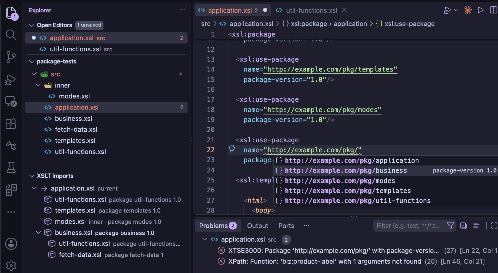

XSLT Packages
An XSLT package is a stylesheet module whose root element is xsl:package,
with a name - usually a URI - and optionally a package-version. Another
stylesheet uses it by name and version, with xsl:use-package, rather than by its file
path:
<xsl:package name="http://example.com/strings" package-version="2.1"
version="3.0" xmlns:xsl="http://www.w3.org/1999/XSL/Transform">
...
</xsl:package>
<!-- in a stylesheet that uses it -->
<xsl:use-package name="http://example.com/strings" package-version="2+"/>
The package URI is an identifier, not a location: xsl:use-package matches it exactly
against the name of each xsl:package, and it isn't resolved like the
href of xsl:import. Neither the XSLT specification nor Saxon fixes where a
package's file is.
The XSLT/XPath extension finds it, so that the declarations the package makes public are known to the linter, auto-completion, hover help and go to definition - and when a stylesheet is run, passes the packages it uses to Saxon.

name attribute of xsl:use-package to select and import from additional packages available.
Packages in the workspace
Every .xsl and .xslt file in the workspace whose root element is
xsl:package is found automatically, by the same background scan of the workspace that finds
the top-level stylesheet importing a module. Its name and version are read from its
xsl:package element - a package with no package-version is version
1. These packages need no setting, and they're read again when saved: change a package's
name or version, and the stylesheets using it see the change.
Packages outside the workspace
For a package kept outside the workspace, for example a library shared between projects, add its path to
the XSLT.resources.xsltPackages setting - relative to the workspace folder, or as a
file: URI. The name and version are read from the file, so the path is all that's
needed:
"XSLT.resources.xsltPackages": [
{ "path": "../shared-xslt/strings.xsl" },
{ "path": "file:///opt/xslt/dates.xsl" }
]
An entry can also give a name and version, which are then used instead of
those in the file - for example, to try a copy of a package under a different version. Packages from the
setting come before those found in the workspace when the same version of a package is in both.
Which version is used
When more than one file declares a package with the same name, the package-version of
xsl:use-package chooses between them: the highest version in its range is used. With no
package-version, the range is *, so the highest version of all is used.
| package-version | Versions it matches |
|---|---|
* | any version |
2.1 | 2.1 only - also written 2.1.0 |
2.* | 2, 2.0, 2.1, 2.1.5 ... |
2+ | 2 or higher |
1.5 to 2.9 | from 1.5 to 2.9, inclusive |
to 2 | 2 or lower |
1.0, 3.0 | any of the ranges separated by commas |
Versions are compared part by part as numbers, so 1.10 is higher than 1.9,
and a missing part counts as 0, so 1 and 1.0.0 are the same version. A version
with a name part, such as 3.0-beta, is lower than the same version without one,
3.0.
What a stylesheet can use from a package
Unlike an imported module, a package decides which of its declarations - its components - other stylesheets can use. A stylesheet using the package sees its public and final components only, as Saxon does, so the linter reports a reference to anything else, and auto-completion doesn't offer it.
| Component | Visibility, with no visibility attribute |
|---|---|
| Function, named template, global variable, attribute set, mode | private - unless an
xsl:expose in the package matches it |
Global xsl:param | public (it can't have a visibility
attribute) |
| Key, accumulator, character map, template rules in the unnamed mode | not exposed as
package components: a stylesheet using the package can't refer to them - e.g. name a key in
key(), or apply the unnamed mode's template rules - though the package's own code uses
them as usual |
<xsl:package name="http://example.com/strings" package-version="2.1" ...>
<!-- functions in the package's namespace are final, unless they say otherwise -->
<xsl:expose component="function" names="str:*" visibility="final"/>
<xsl:function name="str:pad">...</xsl:function> <!-- final -->
<xsl:function name="str:helper" visibility="private">...</xsl:function> <!-- private -->
<xsl:function name="str:format" visibility="abstract" as="xs:string"/> <!-- to be overridden -->
</xsl:package>
A visibility attribute on a declaration takes precedence over xsl:expose.
Where several xsl:expose elements match, the most specific name wins: a name, then a
wildcard such as str:* or *:pad, then *.
In the stylesheet using the package, xsl:accept can narrow a component's visibility - for
example to hidden, so it can't be used at all - and xsl:override replaces a
public or abstract component with a declaration of its own. An abstract component can only be used once
it's overridden. Within the overriding declaration, xsl:original refers to the package's
version.
<xsl:use-package name="http://example.com/strings" package-version="2+">
<xsl:accept component="function" names="str:pad#2" visibility="hidden"/>
<xsl:override>
<xsl:function name="str:format" as="xs:string">...</xsl:function>
</xsl:override>
</xsl:use-package>
A package that uses another package doesn't pass its components on: they're private to it, unless its own
xsl:accept or xsl:expose makes them public.
Overriding package components
An xsl:override declaration must have the same signature as the component it replaces, so the
extension writes it for you - as a Java IDE does for overriding methods - from the package's own
declaration, with the stylesheet's prefixes:
- Override Package Components... - with the cursor anywhere in an
xsl:use-package, this refactoring (from the 💡 light-bulb, or ⌃⇧R) lists the package's public and abstract components that aren't overridden yet, with the abstract ones already ticked. The ones you pick are added to itsxsl:override, which is created if needed - Auto-completion - after
<in anxsl:override, the list starts with an override ... item for each of those components, abstract ones first, with the package's documentation for it - Quick fixes - for abstract components that aren't overridden, see below
An abstract component is a placeholder, so its declaration has a body that stops the transformation until
you implement it, and a documentation note with a TODO and an
@see link to the package's declaration. In an
XSLT 3.0 stylesheet the note is excluded with
use-when="false()":
<xsl:use-package name="http://example.com/shapes">
<xsl:override>
<xsl:function name="shp:area" as="xs:double">
<xsl:note use-when="false()" format="xdoc-md">
TODO: implement the abstract function of package http://example.com/shapes.
@see shp:area#1
</xsl:note>
<xsl:param name="shape" as="map(*)"/>
<xsl:message terminate="yes">shp:area#1 is not implemented</xsl:message>
</xsl:function>
</xsl:override>
</xsl:use-package>
A public component's declaration calls the package's version with xsl:original instead, as Java's
super does, so it behaves as before until you change it - for a template, with an
xsl:with-param for each parameter. A global parameter keeps the package's default.
Abstract components that aren't overridden
Saxon compiles a stylesheet that doesn't override an abstract component it doesn't call - but calling a
component of the package that depends on it stops the transformation, with XTDE3052. So the
xsl:use-package has a warning that lists them, with quick fixes to override them all, or each
one. A call of one in the stylesheet is reported as an abstract component that isn't overridden, with a
quick fix to override it. A package can pass an abstract component on to the stylesheets that use it, with
xsl:accept visibility="abstract": there's no warning then.
Problems with xsl:accept and xsl:override
These static errors, which Saxon reports when it compiles the stylesheet, are reported as you edit - most with quick fixes, shown with the 💡 light-bulb:
| Error | Reported for | Quick fixes |
|---|---|---|
XTSE3020 | a function name in xsl:accept without its arity,
such as str:pad for str:pad#2 | Change to the name with each arity the package has |
XTSE3030 | a name in xsl:accept that the package doesn't
have | Change to a similar name, or remove it |
XTSE3040 | accepting a private component by name, or accepting a component with a wider visibility - a final component as public | Change the visibility to the component's, or remove the name |
XTSE3051, XTSE0020 | a component both accepted and overridden
by the same xsl:use-package - or #unnamed, the unnamed mode, which can't
be accepted | Remove the name |
XTSE3050 | a declaration with the name of a component the package
gives, outside xsl:override | Move it into the xsl:override |
XTSE3058 | overriding a component the package doesn't have | Change to a similar name, or remove the declaration |
XTSE3060 | overriding a private or final component | Remove the declaration |
XTSE3008 | an xsl:use-package in a module that's imported -
directly, or through xsl:include - it belongs in the top-level stylesheet | |
XTSE3070 | an overriding declaration whose types differ from the
original's - its as, and its parameters' types. A template must also keep each
parameter of the original, with the same required and tunnel values
(it may leave out a tunnel parameter), and any parameter it adds must be optional | Change the signature to match the package's - keeping the names of a function's parameters, and the parameters a template adds, made optional |
A name removed from xsl:accept takes the xsl:accept with it, if it's the only
one.
Declared modes
In an xsl:package, each mode used must be declared with xsl:mode - the
declared-modes attribute is yes by default for a package, unlike a
stylesheet. That includes the unnamed mode: a package with template rules that have no
mode attribute needs <xsl:mode/>. An undeclared mode is reported as
XTSE3085, once, where it's first used: in the mode of a template rule or
xsl:apply-templates, or the default-mode of the package. A mode declared in a
module the package includes or imports, or a public mode of a package it uses, is declared.
The quick fixes add the declaration - Add <xsl:mode name="..."/> or Add
<xsl:mode/>, after the package's other xsl:mode elements or before its first
template - or Set declared-modes="no" on the xsl:package.
Hover help
Hover over the name of an xsl:use-package to see the package's documentation
- its module note, the xsl:note that's the first child of
its xsl:package - the version and file used, and the components the stylesheet can use, by
kind. These are after its xsl:accept elements, and without those it overrides, so the list
is the package's public interface as this stylesheet sees it.
Hover help for a function or named template from a package says which package it's from, and its
visibility - for example, Final function of package http://example.com/strings 2.1,
declared in strings.xsl - with its documentation note.
For a declaration in xsl:override, and the calls of it, the hover help says what it overrides -
for example, Overrides the abstract function of package http://example.com/shapes,
declared in shapes.xsl - and if it has no documentation note of its own, it has the package
declaration's, as an overriding method's documentation is inherited in Java. In the note of an overriding
declaration, an @see of the component it overrides links to the package's declaration.
Converting a library to a package
A library that stylesheets use with xsl:import or xsl:include can become a package,
but not just by changing its root element: a package's components are private by default, a stylesheet's
declaration with the name of the library's must move into xsl:override, and some declarations
aren't exposed as package components at all. Analyse as Package... shows what would have to change
for the stylesheets to work as before - it changes nothing.
Run it from the Command Palette, with the library open, or from the context menu of a module in the XSLT Imports view. It checks each top-level stylesheet in the workspace that imports or includes the library, directly or indirectly, and opens a report in the Markdown preview, with links to each place:
- To rework first - what would fail in a package: a global variable whose value uses the
context item, e.g.
select="/*", which has none in a library package (XPDY0002), or anxsl:global-context-item- a stylesheet's declaration that overrides the library's by import precedence, but with a different type, which an override can't have (XTSE3070) - and a name the library uses that isn't declared in it or the stylesheets found to use it, e.g. in a module whose import isn't resolved, as a package must declare all it uses. The report lists imports that aren't found: the XML catalog setting may resolve them, e.g. DITA-OT'splugin:URIs. And code that would move intoxsl:overridefrom a module outside the workspace, or that stylesheets which don't use the library use too, as they'd lose it - Made public - the library's functions, templates, variables and attribute sets that the stylesheets use
- Overrides - the stylesheets' declarations that override the library's by import
precedence, which move into
xsl:override - Abstract components - functions, templates and variables that the library uses but only the stylesheets declare, which the package declares as abstract
- Modes and template rules - the library's named modes that the stylesheets use, and their
template rules in them, which move into
xsl:override- and the unnamed mode, if the library shares it with the stylesheets, which becomes a named mode, as a package keeps its unnamed mode to itself (see below) - Not exposed by a package - keys, accumulators, decimal formats, character maps,
xsl:strip-spaceandxsl:output, which apply only to the package's own code, so the stylesheets need their own copies of those they rely on
The report starts with a verdict: whether the library can be converted, with how many changes, or which items need a decision or reworking first. Each item has a link to its place, then a list of the other modules involved - for a component made public, the stylesheets that use it.
Convert to Package...
When nothing needs reworking first, Convert to Package... makes the changes, from the Command Palette or the context menu of a module in the XSLT Imports view. It asks for the package's name and version, then shows the changes to every module in the Refactor Preview, where you can check them before they're made:
- the library's root element becomes
xsl:package, with the name and version, anddeclared-modes="no" - its components that the stylesheets use or override get
visibility="public", its named modes they use a publicxsl:mode, and the functions it calls that only the stylesheets declare an abstract declaration - in each top-level stylesheet, the
xsl:importorxsl:includeof the library - in any of its modules - is replaced by anxsl:use-packagein the top-level module, after its imports:xsl:use-packagecan't be in an imported module (XTSE3008) - the stylesheet's overriding declarations and template rules move into its
xsl:override, named with its prefixes, andxsl:apply-importsin them becomesxsl:next-match - the stylesheet gets its own copies of the keys, decimal formats, character maps,
xsl:strip-spaceandxsl:outputit relied on
Any items the analysis listed as needing a decision are left as they are - after the conversion, the linter reports what still needs to change, mostly with quick fixes.
The unnamed mode
A library and the stylesheets that import it often share the unnamed mode: the stylesheets apply the library's
template rules, and add rules of their own, which take precedence. A package's unnamed mode is private to it,
so the conversion asks for the name of a public mode that it becomes - e.g. lib:default,
with a prefix the library declares - and then:
- each of the library's modules gets
default-mode="lib:default", so its template rules andxsl:apply-templateswithout amodeare in the named mode - and itsxsl:modefor the unnamed mode, if it has one, gets the name andvisibility="public" - the stylesheets' template rules in the unnamed mode move into
xsl:override, with the mode, and theirxsl:apply-templateswithout a mode get it - each top-level stylesheet gets a template rule that applies templates in the named mode: the transformation starts in the stylesheet's unnamed mode, as a package's mode can't be the initial mode
<!-- the transformation starts in the unnamed mode: this applies templates in the mode of package urn:lib that it became -->
<xsl:template match=".">
<xsl:apply-templates select="." mode="lib:default"/>
</xsl:template>
A stylesheet's own xsl:mode for the unnamed mode, e.g. with on-no-match, has to
move to the library first, as a mode can't be overridden.
A template rule that's also a named template, with both match and name, can't move
into xsl:override as it is, where it would also override a named template the package doesn't
have. It's split: the named template stays where it is, and a template rule that calls it, passing its
parameters, moves into xsl:override. A rule that uses xsl:next-match or
xsl:apply-imports can't be split like this, as they depend on the current template rule, so
it has to be reworked first.
Running and debugging
When a stylesheet that uses packages is run - with Quick Run, an
XSLT task for SaxonJ or SaxonC, or the debugger -
the package files are passed to Saxon with its -lib option. These are the packages used
by the stylesheet, by the modules it imports or includes, and by the packages themselves - each the
version chosen as above. Saxon reads each package's name and version from the file, as the extension
does, so packages are only ever declared in one place: the packages themselves.
Without this, Saxon reports XTSE3000 Cannot find package for each package used.
A package that isn't found
An xsl:use-package whose package isn't found - no package with the name, or none with a
version in its package-version range - is reported as an error, XTSE3000, as
Saxon reports it. Two quick fixes are offered:
- Create Package '...' - choose where to save a new package file, by default beside
the stylesheet and named from the package URI's last part. It has the package's name, and the version
the
package-versionasks for (the lowest, for a range such as2+) - Add Existing Package File... - pick a package file, for example outside the
workspace, to add to the
XSLT.resources.xsltPackagessetting. Itsxsl:packagemust have the name, and a version in the range
Auto-completion
In the name of an xsl:use-package, auto-completion lists the URIs of the
packages found - in the workspace and the XSLT.resources.xsltPackages setting - with each
package's versions. In its package-version, it lists * and the versions of the
named package, highest first.
Navigating to a package
The name of an xsl:use-package is a link to the package's file - press
⌘+click to open it. Go to definition, hover help and auto-completion for
the package's public functions, templates, variables and other components work as for an imported
module.
Navigating between overrides
Between a package's components and the declarations that override them, VS Code's own commands work:
- Go to Implementations (⌘F12) - from a package component, or a call of it, to the declarations in the workspace that override it
- Go to Declaration - from an overriding declaration's name, or
xsl:originalwithin it, to the package's declaration - Find All References (⌥⇧F12) - for a package component, includes the declarations that override it - and for an overriding declaration, the package's declaration
With code lenses on (the editor.codeLens setting), an overriding declaration shows overrides public function str:pad#2 of package http://example.com/strings, which goes to the package's declaration, and a package component shows overridden in 2 modules, which lists the declarations that override it.